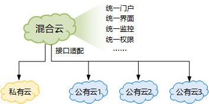
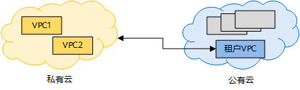

混合云
混合云（Hybrid Cloud）作为云计算的一种形态，它将私有云和是公有云协同工作，从而提高用户跨云的资源利用率。混合云帮助用户管理跨云、跨地域的IT基础设施，是包含了公有云和私有云中各类资源和产品的一个有机整体系统。
1. 混合云产生的背景¶
现阶段，企业IT架构已经从过去的集中式大型机迁移到当前的分布式虚拟化架构，并正在向多地多云的架构演进。根据业务自身特点的不同，总体上可以分为稳态业务和敏态业务两类，不同的业务适合分别部署在私有云、公有云中。
- 稳态业务，常常通过物理机承载，要求高可靠、低时延等，通常部署在传统网络或私有云中，满足裸机、数据库、核心业务等业务诉求，以及各种不入云服务器的接入需求。
- 敏态业务，常常由虚拟机承载，通过DevOPS模式来迭代应用程序，通常部署在公有云中，满足对资源的敏捷、弹性诉求。
用户可以灵活根据业务特点选择云计算模式。例如，出于安全考虑，用户可以将私密数据存放在自己的私有云中。同时，将那些测试类业务（经常变更与升级）、外部用户经常访问的业务部署在公有云上，充分利用公有云可靠性、专业运维、快速资源扩容等优点。
混合云是近年来云计算的主要模式和发展方向，被列为Gartner 2020年的十大战略技术趋势之一。
2. 混合云的特点和价值¶
企业部署云计算服务的模式有三大类：公有云（Public Cloud）、私有云（Private Cloud）、混合云（Hybird Cloud）。其中，混合云帮助用户管理跨云、跨地域的IT基础设施，是包含了公有云和私有云中各类资源和产品的一个有机整体系统。
混合云不是简单的私有云和公有云的叠加，混合云需要提供以下能力：
-
打通用户私有云与远端公有云之间的连接，保证符合要求的数据可以在用户私有云和公有云之间互通，进而为用户提供业务层面更灵活的部署方式。私有云与公有云之间的连接方式常见的有专线连接、VPN连接等。
-
在公有云和私有云之间提供统一的服务体验，例如服务门户统一、资源监控界面统一、账户权限统一等。
 混合云需提供统一的服务体验
-
实现私有云与公有云上的VPC（Virtual Private Cloud，虚拟私有云）互通，为用户构建跨多云的虚拟私有混合云。
 私有云与公有云VPC互通
{kind=link}
{kind=link}
{kind=link}
混合云具有以下价值：
- 增加业务灵活性：用户按需选择业务的部署方式，将企业核心数据部署在私有云上，企业完全拥有绝对控制权；在公有云上部署新应用，用于迭代开发和测试，同时获得公有云灵活快捷和私有云安全稳定的好处。
- 降低成本：云存储的成本比等量本地存储成本要低，可以用来备份数据。此外，当业务扩容时，尤其是临时业务量激增时，可以先通过“即买即用”的公有云快速扩容业务，而无需购置、部署本地ICT设施；当业务量恢复后，可释放公有云资源，降低成本。
- 提高可用性和访问能力：公有云通常部署在全国甚至全球多个数据中心里，提供了几乎无处不在的连接，用户可从几乎任何位置访问云服务。相比纯私有云服务方式，混合云提高了业务的可用性和访问能力。
- 业务迁移便捷：公有云服务提供商一般会提供专用工具，方便用户将业务在私有云、公有云之间方便地迁移和测试。
- 促进业务创新：用户可以先使用公有云完成新业务的开发、测试，降低失败的成本，使用户可以更专注于业务本身，而不必过分担心超越ICT资源的使用极限。同时，用户可以方便地获取、试用公有云上的一系列新服务、新工具来为自己使用，而不必先在本地部署同样的工具和服务，这样有利于用户自身业务的创新。
3. 混合云的使用场景¶
-
业务突发，应用负载扩充
企业将应用部署于私有云内时，为应对季节性或突发事件引起的业务高峰需求，可临时租用公有云的资源，快速提升业务响应能力。
-
灾难恢复
混合云的灾难恢复一般采用主从架构。在这种架构下，用户可以把备用的业务数据放在公有云上，借助公有云提供商的技术优势、灾备经验、运维管理等资源，快速实现数据灾难恢复，保障服务的连续性。同时，与全部使用私有云相比，混合云的灾难恢复还可以降低运维工作量，节省灾备系统成本。在私有云数据中心发生重大灾难时，用户可以在公有云端利用云主机快速切换，将备份数据拉起，大幅降低RTO（Recovery Time Objective，恢复时间目标），实现业务高可用。
-
数据备份
数据备份的目的是把某一时间的数据或应用保存在一个安全可靠的地方。通常的场景是应用负载运行在公有云或私有云上，而数据备份放在私有云或公有云里，以达到数据安全的目的。
-
前端服务靠近用，后端集中处理
对于拥有多个分支的企业，尤其是跨国企业来说，如果业务都由总部数据中心来集中处理，随着业务量的增加，总部的处理能力和接入带宽将明显成为瓶颈。通过混合云方案，将前端服务部署在公有云上，利用公有云多Region和CDN的优势使服务尽量靠近最终用户，后端仍部署在总部私有云中。前端处理完成后，只需要少量的前后端交互访问即可完成整个业务处理。
-
开发测试生产部署
对一个应用而言，其开发测试过程一般需要灵活快捷的环境搭建，而且期间经常重构，这时公有云是个不错选择。一旦正式上线，则希望运行在安全稳定的环境中，那时就会考虑私有云。在这种情况下，同一应用不同阶段相互之间独立，没有直接联系。通过构建混合云，利用DevOps流程与工具，就可同时获得公有云灵活快捷和私有云安全稳定的好处。
-
私有云应用访问公有云服务
私有云内部署的应用，可使用私网IP通过VPN或专线的方式来访问公有云提供的服务，简化本地应用系统的开发与部署。
4. 混合云服务提供商¶
在混合云市场，原先的公有云和私有云提供商，目前也都陆续推出了自己的混合云产品，以满足用户对混合云旺盛的需求。
常见的混合云服务提供商有：华为云、阿里云、亚马逊AWS、微软Azure、谷歌云计算、VMware、Redhat等。